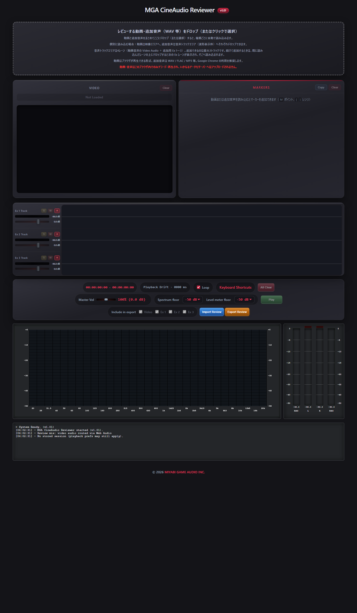
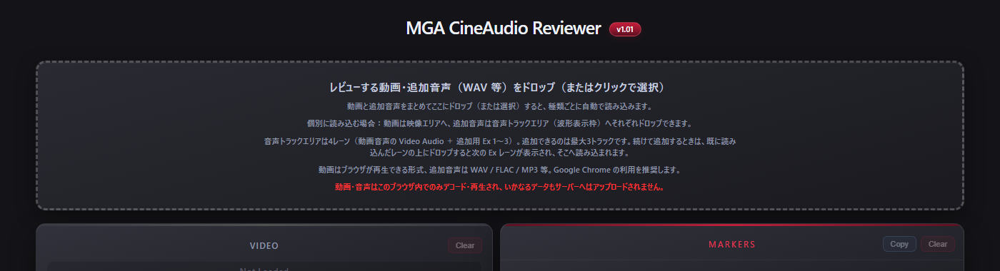
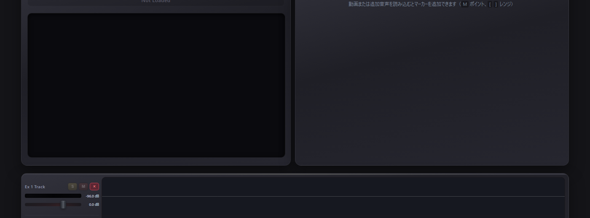
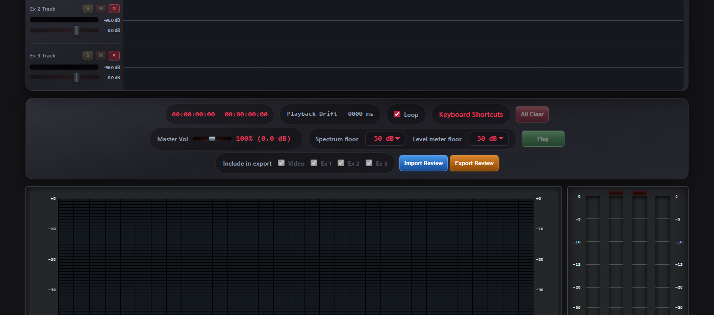
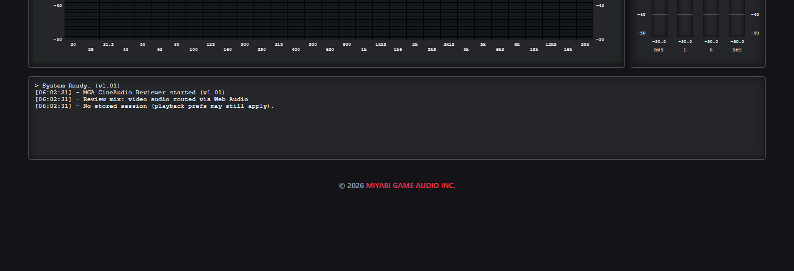

プライバシー：動画・音声はこのブラウザ内だけでデコード・再生され、サーバーへアップロードされません。Google Chrome の利用を推奨します。
本ページは画面上の上から下の並びに沿って説明します。トランスポート行の 使い方 リンクからいつでも開けます。
画面の構成

- ① ドロップゾーン — ファイル読み込みの入口
- ② 映像（Video）とマーカー（Markers）
- ③ 音声波形レーン（Video Audio ＋ Ex 1〜3）
- ④ トランスポート — 再生・ループ・マスター音量・レビュー入出力
- ⑤ スペクトラムとレベルメーター（ミックス結果のモニター）
- ⑥ ログ — 操作やエラーの記録
操作の流れ
初めて使うときは、次の順で進めると迷いにくいです。
- 動画（必要なら追加音声も）をドロップゾーンまたは各エリアへ読み込む。
- 映像を確認しながら、Play または Space で再生・停止する。
- 波形上で位置を合わせ、Solo / Mute / フェーダー でミックスを聴き比べる。
- 気になる箇所にマーカー（点または範囲）と Feedback を付ける。
- 必要に応じて Export Review でレビュー一式（.mgacr）を保存・共有する。
ファイルの読み込み

まとめて読み込む（推奨）
- 画面上部のドロップゾーンへ、動画と追加音声（WAV / FLAC / MP3 等）を一度にドロップするか、クリックして複数選択します。
- 種類ごとに自動判別され、動画は映像パネルへ、音声は空いている Ex レーンへ順に割り当てられます。
個別に読み込む
- 動画 → 映像エリア（Video パネル）へドロップ、またはドロップゾーンで動画のみ選択。
- 追加音声 → 音声トラックエリア（波形表示枠）へドロップ。空いている Ex レーンに入ります。
- すでに Ex レーンが表示されているときは、読み込み済みレーンの上にドロップすると、次の空き Ex レーンが開いてそこへ読み込まれます。
トラック数の上限
- 音声レーンは最大 4 本（動画内音声の Video Audio ＋ 追加用 Ex 1〜3）。追加できるのは最大 3 トラックです。
- 動画に音声トラックがない場合、Video Audio レーンは自動で非表示になります（Ex のラベル位置は揃います）。
対応形式
- 動画：ブラウザが再生できる形式（MP4 / WebM / MOV など）。
- 追加音声：WAV / FLAC / MP3 / OGG / M4A など。
映像パネル（Video）

再生とタイムコード
- 読み込み後、映像の上に HH:MM:SS:FF 形式のタイムコードが重なって表示されます。
- オーバーレイはドラッグで移動、端をドラッグしてサイズ変更できます。フレーム中央付近ではスナップします。位置はブラウザに保存され、次回も復元されます。
- パネル直下にはファイル名・メタ情報（FPS など）が表示されます。
同期の考え方
- シークバーとトランスポートの現在位置は音声（マスター）基準です。映像は通常は自然再生に任せ、大きくズレたときだけ補正します（カクつき防止）。
- トランスポートの Playback Drift で映像と音声のズレ（ミリ秒）を確認できます。色は安全（通常）／注意（オレンジ）／危険（赤）で変わります。
Clear
Video パネル右上の Clear で動画だけをアンロードします（追加音声やマーカーは残る場合があります。全体リセットは All Clear）。
マーカー（Markers）
動画または追加音声を読み込んだあと、レビュー用の印とコメントを付けられます。
ポイントマーカー（1 時刻）
- 再生位置で M を押すと、現在位置にポイントが追加されます。
- 一覧の Feedback 列をクリックしてコメントを入力します。再生中は映像上にコメントが短時間表示されます。
範囲マーカー（In 〜 Out）
- [ で In（開始）を設定し、続けて ] で Out（終了）を設定します。In 設定中はパネルにヒントが出ます。
- 波形上のマーカー区間の端（ハンドル）をドラッグして In / Out を調整できます。
- 表の In / Out 列をクリックするとタイムコードを直接編集できます（+ / − でフレーム単位の微調整も可能）。
一覧の操作
- 行をクリックするとその位置へシークします（再生中はジャンプしません — 停止してから操作してください）。
- Shift + ↑ / ↓ でマーカー間を移動、Alt + ↑ / ↓ で Feedback 行を移動します。
- Copy — 表をタブ区切りテキストでコピー（Length 列なし）。スプレッドシートへ貼り付け向け。
- Clear — すべてのマーカーを削除。
波形上にもマーカー位置・範囲・コメントラベルが表示されます。重なる場合は縦に段を下げて表示します。
音声波形・ミックス

レーンの見方
- 左サイドバー：トラック名、S（Solo）、M（Mute）、×（レーンを非表示／クリア）、レベルメーター、音量フェーダー。
- 右側：各トラックの波形。クリックまたはドラッグでシーク、ホイールでズーム・横スクロール（詳細はキーボードショートカット参照）。
- 赤い縦線が再生ヘッドです。再生中は通過軌跡が残る表示があります。
追加音声の開始位置
Ex レーンの波形上で Alt を押しながらドラッグすると、そのトラックの再生開始位置（タイムライン上のオフセット）をずらせます。映像より遅れて入る音源の同期に使います。
範囲ループ（波形上）
- 波形エリアで右ドラッグすると、その区間だけをループ再生します。
- 解除：Esc、右クリック、または別の操作でキャンセル（ショートカット表の Esc 優先順位を参照）。
キーボードでのミックス（レーン 1〜4）
| 操作 | レーン 1（Video Audio） | レーン 2（Ex 1） | レーン 3（Ex 2） | レーン 4（Ex 3） |
|---|---|---|---|---|
| Solo | 1 | 2 | 3 | 4 |
| Mute | Q | W | E | R |
| 音量 +1 dB | A | S | D | F |
| 音量 −1 dB | Z | X | C | V |
表示されているレーンの数に合わせて波形パネルの高さが変わります。空の Ex 枠は非表示にできます。
トランスポート（再生コントロール）
波形の下にある操作バーです。上段から順に説明します。
上段
- 現在時刻 − 総尺 — マスター FPS に基づくタイムコード。
- Playback Drift — 映像と音声のズレ（ms）。動画読み込み後に表示。
- Loop — 全体のループ再生のオン／オフ（L）。設定は次回起動時に復元されます。
- 使い方 / Keyboard Shortcuts — それぞれ本ページとショートカット一覧を新しいウィンドウで開きます。
- All Clear — 動画・追加音声・マーカー・保存セッションをまとめてクリア。
下段（再生・モニター設定）
- Master Vol — ミックス後のマスター音量（% と dB 表示）。
- Spectrum floor / Level meter floor — スペクトラムとレベルメーターの表示下限（dB）。
- Play — 再生／停止（Space）。初回再生時は Video / Markers 行が見える位置へ自動スクロールします。
シーク・ジャンプ（動画読み込み後）
- 矢印キー：1 フレーム（再生中は一度停止してから）
- Shift + 矢印：1 秒
- Ctrl + 矢印：5 秒
- Ctrl + Shift + 矢印：10 秒
- テンキー 0〜9：尺の 0〜90 % へジャンプ
レビューの保存・共有（.mgacr）
トランスポート最下段の Import Review / Export Review で、レビュー状態を 1 ファイルにまとめられます。
Export Review
- Include in export で、パッケージに含めるメディアを選びます（Video / Ex 1〜3）。
- 含まれる主な内容：選択した動画・追加音声、ファイル名、マーカー、各トラックのミックス（Solo / Mute / 音量）、再生位置、表示設定など。
- 出力ファイルの拡張子は .mgacr です。チーム内でレビュー結果を渡すときに使います。
Import Review
- 以前エクスポートした .mgacr を選ぶと、メディアとマーカー・ミックス設定を復元します。
- 大きなファイルは読み込みに時間がかかることがあります。ログ欄に進捗や結果が表示されます。
スペクトラム・レベルメーター

- 左：スペクトラム — 周波数成分の推移。floor はトランスポートの Spectrum floor で変更。
- 右：レベルメーター — RMS（左右）とピーク L/R。クリップランプが点灯したら音量を下げてください。floor は Level meter floor で変更。
- いずれもマスター出力のミックス後を表示します。特定の 1 トラックだけを計測する用途ではありません（トラック別には各レーン左のメーターを参照）。
キーボードショートカット
テキスト入力中は多くのショートカットが無効になります（一部 Esc を除く）。Mac では Ctrl の代わりに Cmd も使えます。
Keyboard Shortcuts（一覧ページ）を開く →
アプリ内のトランスポート行からも同じページを新しいウィンドウで開けます。
データの保存と復元
- 読み込んだ動画は IndexedDB にコピーされ、次回ページを開いたときに復元されます（F5 リロード時は自動再生しません）。
- Loop のオン／オフ、タイムコードオーバーレイ位置、レーンの表示状態などは localStorage に保存されます。
- 元ファイルを DAW 等で書き出し直しても、本アプリは自動では再読み込みしません。最新版を反映するには再度ドロップしてください。
- ブラウザのストレージ整理で IndexedDB が消えると、前回のセッションは復元できません。
ヒント・注意
- ログ（画面最下部）に読み込み・エクスポート・同期のメッセージが出ます。うまくいかないときはまずここを確認してください。
- 長時間・大容量ファイルではメモリ使用量が増え、操作が重くなることがあります。
- タブをバックグラウンドにすると、メーターや表示の更新が遅れることがあります（ブラウザの仕様）。正確に見たいときはタブを前面にしてください。
- 本アプリは静的 HTML です。
index.htmlをブラウザで開くだけで動作します（ローカル HTTP サーバー推奨）。